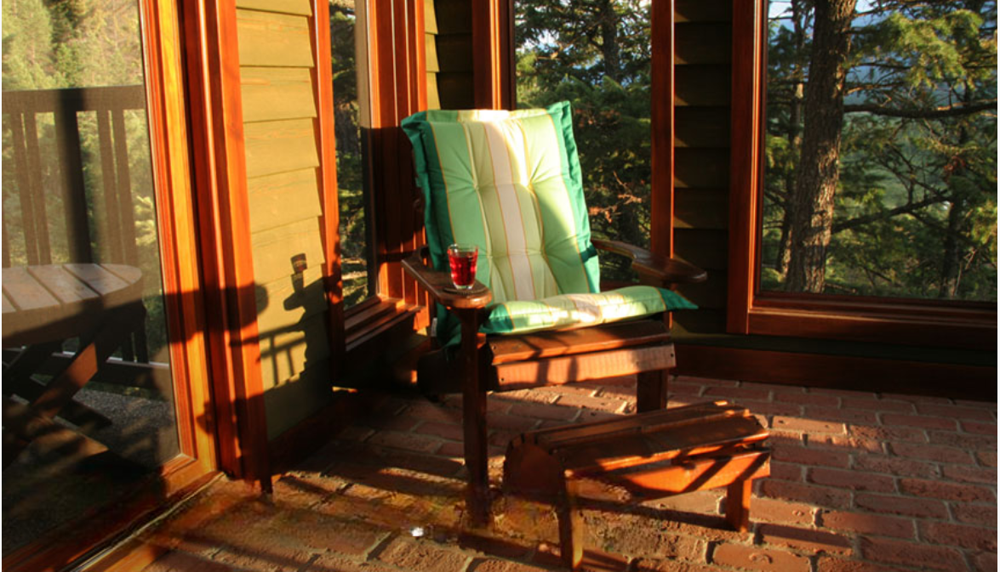

<div class="container-fluid mt-4">
    <div class="row">
    <div class="col-lg-12">
            <div class="order-1 order-lg-0">
                <div class="row align-items-center">
                    <div class="col-lg-8 col-md-12">
                        
                        <h1 style="margin-top: -10%; margin-left: 2%; color: white;">Welcome {{name}}... !</h1>
                    </div>
                    <div class="col-lg-4 col-md-12 faqhome">
                        <div class="accordion" id="accordionExample">
                            <div class="accordion-item">
                                <h2 class="accordion-header" id="headingOne">
                                    <button class="accordion-button" type="button" data-bs-toggle="collapse"
                                        data-bs-target="#collapseOne" aria-expanded="true" aria-controls="collapseOne">
                                        #1 How can I find out who deleted visits?
                                    </button>
                                </h2>
                                <div id="collapseOne" class="accordion-collapse collapse show"
                                    aria-labelledby="headingOne" data-bs-parent="#accordionExample">
                                    <div class="accordion-body">
                                        Report > Audit Trail. Doc type: Deleted visits
                                    </div>
                                </div>
                            </div>
                            <div class="accordion-item">
                                <h2 class="accordion-header" id="headingTwo">
                                    <button class="accordion-button collapsed" type="button" data-bs-toggle="collapse"
                                        data-bs-target="#collapseTwo" aria-expanded="false" aria-controls="collapseTwo">
                                        #2 How do I document interventions in the SNAP note?
                                    </button>
                                </h2>
                                <div id="collapseTwo" class="accordion-collapse collapse" aria-labelledby="headingTwo"
                                    data-bs-parent="#accordionExample">
                                    <div class="accordion-body">
                                        1. Click on the Pencil in the Action column for the visit 2. Select the clinical
                                        note (e.g., SN, PT) from the Visit Note drop down
                                    </div>
                                </div>
                            </div>
                            <div class="accordion-item">
                                <h2 class="accordion-header" id="headingThree">
                                    <button class="accordion-button collapsed" type="button" data-bs-toggle="collapse"
                                        data-bs-target="#collapseThree" aria-expanded="false"
                                        aria-controls="collapseThree">
                                        #3 How do I view the OASIS SOC?
                                    </button>
                                </h2>
                                <div id="collapseThree" class="accordion-collapse collapse"
                                    aria-labelledby="headingThree" data-bs-parent="#accordionExample">
                                    <div class="accordion-body">
                                        1. Select Visit from calendar 2. Click OASIS Start of Care (SOC) under Patient
                                        Form column
                                    </div>
                                </div>
                            </div>
                            <div class="accordion-item">
                                <h2 class="accordion-header" id="headingFour">
                                    <button class="accordion-button collapsed" type="button" data-bs-toggle="collapse"
                                        data-bs-target="#collapseFour" aria-expanded="false"
                                        aria-controls="collapseFour">
                                        #4 How do I run a report on all visits missing orders?
                                    </button>
                                </h2>
                                <div id="collapseFour" class="accordion-collapse collapse" aria-labelledby="headingFour"
                                    data-bs-parent="#accordionExample">
                                    <div class="accordion-body">
                                        Report > Visits missing orders. Orders > visit reports > Show me all orders
                                    </div>
                                </div>
                            </div>
                        </div>
                    </div>
                    <div class="mt-5 pt-3 pb-1 " style="background-color: #FFC52F;   ">
                        <p class="p-2 ">Need help with anything? , If so, call our help desk at 800-954-8250 x-1 or
                        </p>
                    </div>
                    <div class="row m-0 p-0 ">
                        <div class="col-lg-8 col-xs-12 rounded-1 " style="background-color: #E9E6CF;">
                            <h2 class="pt-4 pb-4" style="color: #F15A22; font-size: 150%;font-weight: 700 ;">YOU'VE
                                GOTTA SEE THIS (ENHANCEMENT)!</h2>
                            <p>. HHCCN and NOMNC Forms Available from Admission</p>
                            <p>. Aging Balance Due Report by OFFICE</p>
                            <p>. Co-Signature Available for Therapy Assistant Notes</p>
                            <p>. Unlimited Characters for Added Phrase</p>
                            <p>. Patient Signature Option for “Orders and Documents” Entry</p>
                        </div>
                        <div class="col-lg-4 col-md-12">
                            <h5 style="color: #686868;  font-weight: 400;">PAST ALERTS</h5>
                            <a href="">See Alora announcements ></a>
                            <h5 style="color: #686868;  font-weight: 400;">PERFORM EVEN BETTER!</h5>
                            <p><a href="">Review/Add Additional Features and Add Additional Licenses ></a></p>
                            <h5 style="color: #686868;  font-weight: 400;">MASTER YOUR ALORA SKILLS</h5>
                            <p> <a href="">Visit our library of how-to-use-Alora videos ></a></p>
                            <a href="">Get and share helpful tips on using Alora software ></a>
                        </div>
                    </div>
                </div>
            </div>
        </div>
    
    </div>
    </div>
    